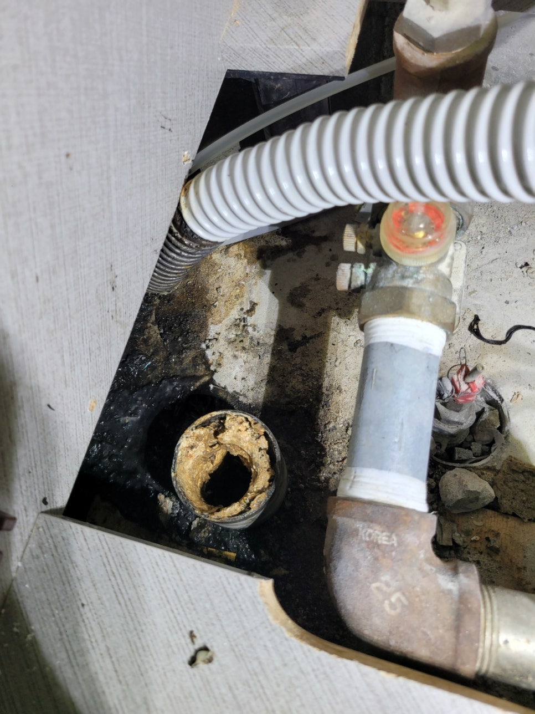
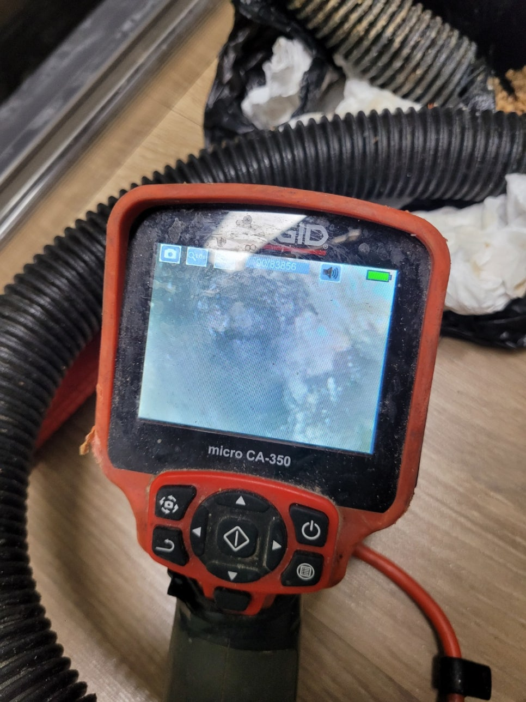
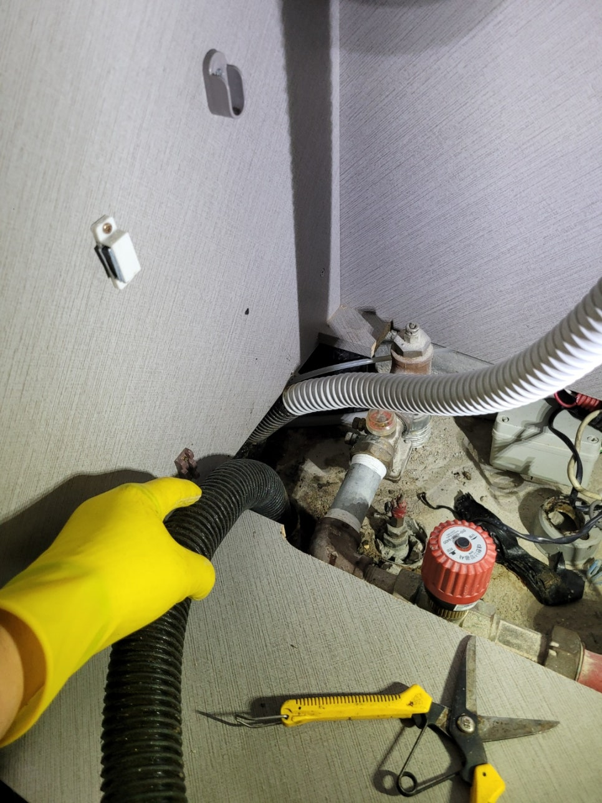
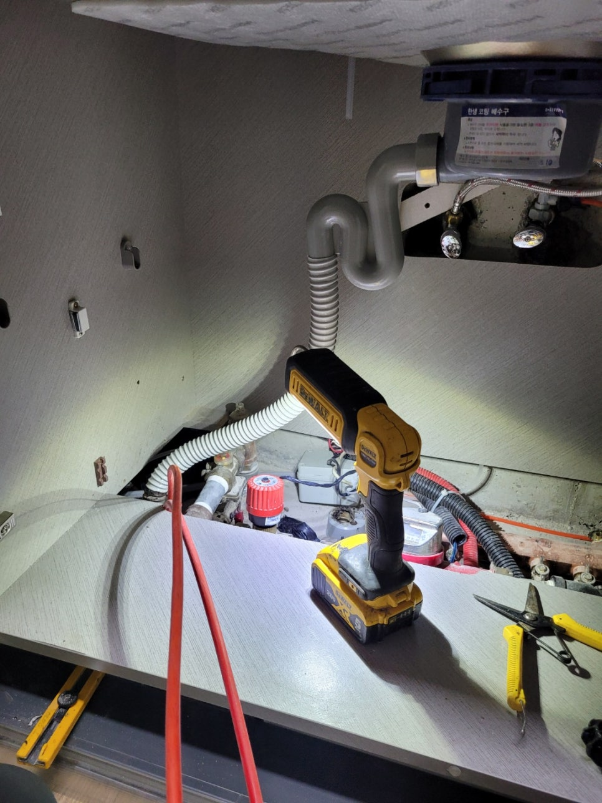
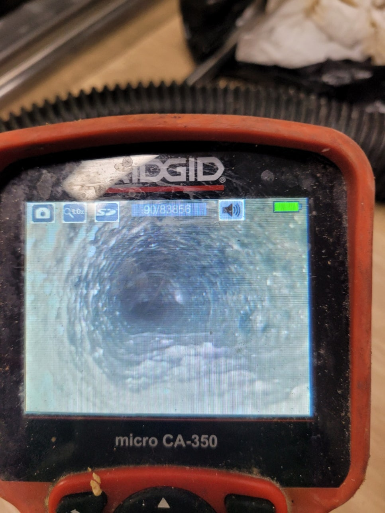
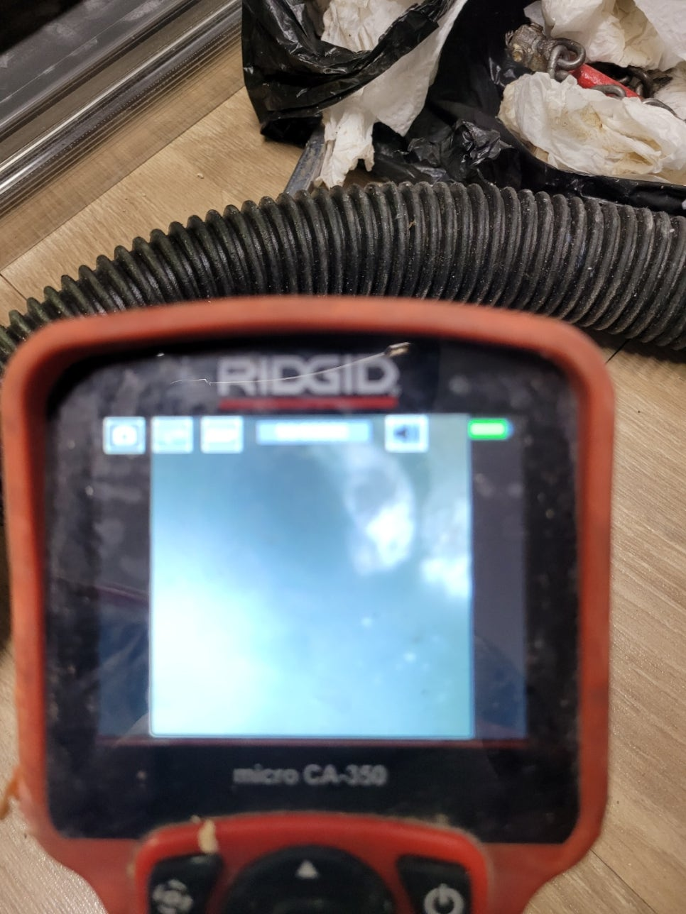

🏠 권선구 호매실동 고색동 싱크대막힘 속 시원하게 해결해드리기 위한 작업을 진행해 드렸습니다!
용인 고색동 싱크대막힘 전문 시공 후기

📋 작업 개요
- 위치: 용인 고색동, 고색동, 용인
- 서비스 유형: 싱크대막힘, 하수구막힘, 배관막힘, 역류해결, 뚫는업체, 고압세척
- 작업 일시: 2022. 9. 11. 21:46
- 업체명: 하수구수사대 (010-5615-2118)
🔍 문제 상황
안녕하세요.하수구수사대 입니다.반갑습니다.
모든 문제의 상황들은 갑작스레 발생되어 우리를 당황하게 만드는데요. 평소처럼 이용하던 배수구가 갑자기 막혀 역류가 되고 물이 정상적으로 배수되지 않게 된다면 누구든 당황할 수 있습니다. 이때 빠르고 정확하게 대처를 해야지만 신속하게 상황을 해결할 수 있고 나중에 같은 문제로 불편함을 겪는 일이 없게 되므로 참고하시기 바랍니다.
권선구 호매실동 고색동 싱크대막힘으로 현장을 방문하고 왔습니다.
찔끔 찔끔 불편함을 느끼게 했던 싱크대가 완전히 막혀버리는 바람에 못 쓰고 있는 상황이라고 하셨는데요. 신속하게 상황을 해결해 드릴 수 있도록 일정을 조율한 뒤 현장을 방문하였습니다. 다세대 주택이라 내부에 거주하고 계신 많은 세대가 한꺼번에 불편함을 겪고 계시는 상황이었습니다.
그래서 각각 세대에서 어떤 피해가 있는지 꼼꼼하게 체크부터 한 후 진행을 하였습니다. 이런 식으로 여러 세대가 거주하는 건물에서는 한번 작업을 할 때 각 세대의 동의를 구해야 해서 일정 조율을 신중하게 하는 것이 좋습니다.

🔎 원인 분석
💡 전문가 진단: 권선구 호매실동 고색동 싱크대막힘으로 현장을 방문하고 왔습니다.
내부를 먼저 살펴보았습니다.
내부 상태를 살펴보았을 때 몇몇 세대에선 물이 빠르게 배수가 되지 않고 있어 싱크대나 욕실을 사용할 때 어려움을 느끼고 있는 상황이었습니다. 1층에서는 이미 역류로 인해서 엉망이 된 상황이었고요. 신속히 해결해 드리기 위하여 내시경으로 문제 파악부터 진행하였습니다.
보통 한 세대에서 발생되는 문제는 그 세대에 방문해서 내시경 및 뚫음을 진행하는데 권선구 호매실동 고색동 싱크대막힘 현장처럼 여러 세대에서 동시적으로 문제가 발생하게 되었을 때에는 메인 배관을 먼저 체크를 해야 됩니다.
내시경을 사용한 파악을 진행했는데요.
메인 배수관으로 내시경을 투입한 다음 내부 상태를 먼저 파악하였습니다. 내시경 카메라에 비치는 배수관 내부 상태는 생각하였던 것보다 심각한 상태였는데요. 전체적으로 쌓인 이물질의 양도 굉장히 많았고 몇 년 이상은 단 한 번도 고압세척이 진행되지 않았던 것 같습니다.

🔧 작업 과정
배수관을 막힘없이 쾌적하게 사용하기 위한 방법으로는 정기적으로 배관을 세척하는 과정을 진행하는 것이 좋습니다. 작업하는 비용이 발생되지만 권선구 호매실동 고색동 싱크대막힘 현장처럼 이미 발생한 후 원상복구를 하는 비용과 비교하였을 때 훨씬 경제적인 방법입니다.
대형 건물은 1년에 2번 이상 세척하는 곳들이 많이 있습니다.
일반 가정집에서도 다세대 주택이나 아파트에 거주하실 경우 공동배관을 주기적으로 고압세척 받으며 관리하는 분들이 많이 계십니다. 우리가 사용하는 모든 배수관은 하나로 연결되어 있는데요.
우리 집에서 아무리 배수구를 통하여 이물질을 내려보내지 않고 청결히 관리한다고 해도 다른 세대에서 조심히 사용하지 않으면 결국 권선구 호매실동 고색동 싱크대막힘이 발생하게 됩니다. 그렇기 때문에 모든 세대에서 같이 노력하시는 것이 좋습니다.
전체적으로 상황을 파악한 후 본격적으로 고압세척을 진행하였습니다.
고압세척은 세척하는 전용 노즐을 호스에 연결한 다음 이 호스를 배관 내부로 투입하여 작업이 진행됩니다. 이때에는 배수관에 최대한 피해를 주지 않게끔 알맞은 노즐을 연결해 주는 것도 중요합니다. 이 절차면 완료되면 작업 준비는 모두 끝나게 됩니다.
빠른 문제 해결을 완료하였습니다.
막힘의 상태를 파악해서 어떤 노즐을 사용할지 꼼꼼하게 파악한 후 작업이 진행됩니다. 빠르게 해결하는 것도 물론 중요하지만 무엇보다도 확실하게 해결하는 것이 가장 중요해서 시간이 조금 소요되어도 상황에 따라 정확한 작업을 구축해야 됩니다.


✅ 작업 완료
고압세척을 진행하면 내부에 쌓였던 모든 이물질들이 분쇄가 돼서 물과 같이 섞이며 외부로 시원하게 배출되게 됩니다 외부에서 진행되는 고압세척을 모두 끝낸 후 내부에 역류되었던 배수구까지 깔끔히 해결해서 마무리를 해줍니다.
고객님께서도 권선구 호매실동 고색동 싱크대막힘이 해결되어 다행이라면서 좋아하셨습니다.
어떠한 막힘으로 고생 중이시라면 언제든 저희 하수구수사대에 문의주시기 바랍니다.




⚠️ 주방 싱크대 배관 막힘 예방 수칙
- ✅ 기름기가 묻은 식기나 프라이팬은 설거지 전 키친타올로 반드시 기름때를 닦아내세요.
- ✅ 주기적으로 싱크대 개수대에 뜨거운 물을 가득 받아 한 번에 내려 배관 내부 기름을 씻어내세요.
- ✅ 배수구 거름망을 미세한 필터로 사용하시고 음식물 찌꺼기가 틈으로 새어 들지 않게 관리하세요.
- ✅ 베이킹소다와 식초를 뜨거운 물과 함께 일주일에 한 번씩 부어주면 배관 살균과 막힘 예방에 좋습니다.
💡 핵심 정리
- 확실한 장비 작업(내시경 점검 및 샤프트 스케일링)으로 원인을 뿌리 뽑습니다.
- 작업 후 1년 이내에 동일한 부위 재발 시 100% 무상 A/S 서비스를 보장합니다.
- 서울 · 경기 · 인천 전 지역에 24시간 언제든 긴급 출동할 수 있도록 항시 대기 중입니다.
❓ 자주 묻는 질문 (FAQ)
🚨 용인 고색동 싱크대막힘 문제로 고민이신가요?
정확한 원인 진단과 확실한 시공으로 재발 없는 해결을 약속드립니다.
24시간 긴급 출동 | 서울 · 경기 · 인천 전지역 | 1년 내 재발 시 무상 A/S